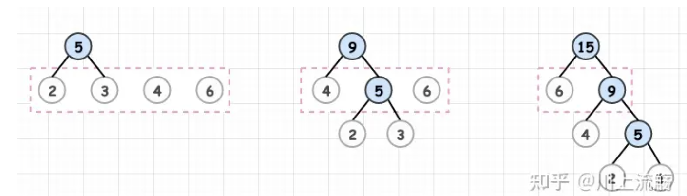
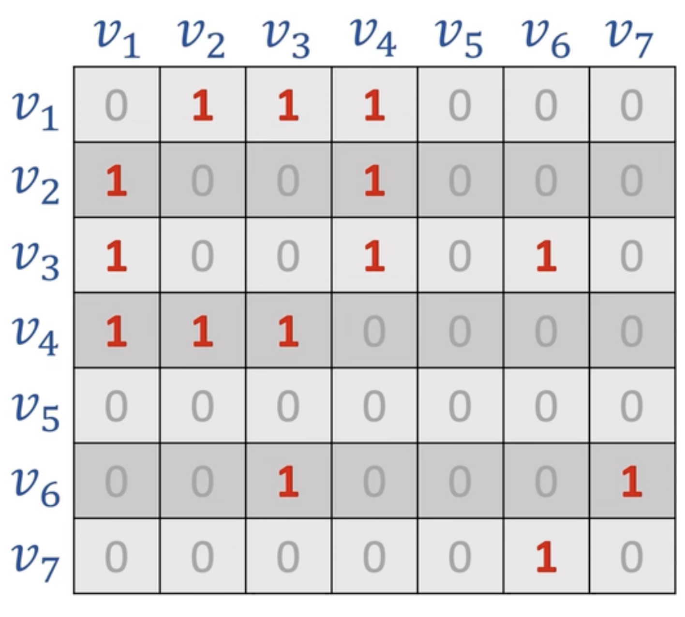
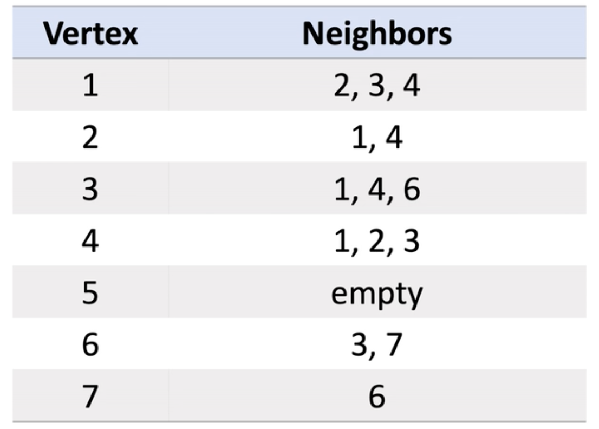
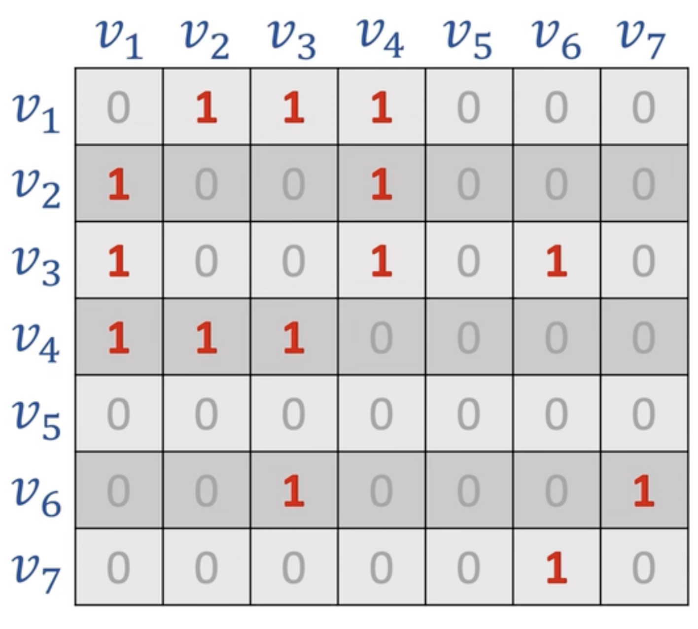
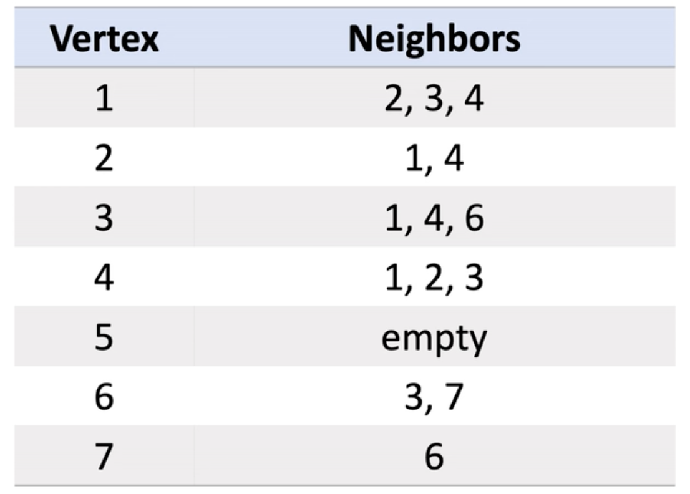
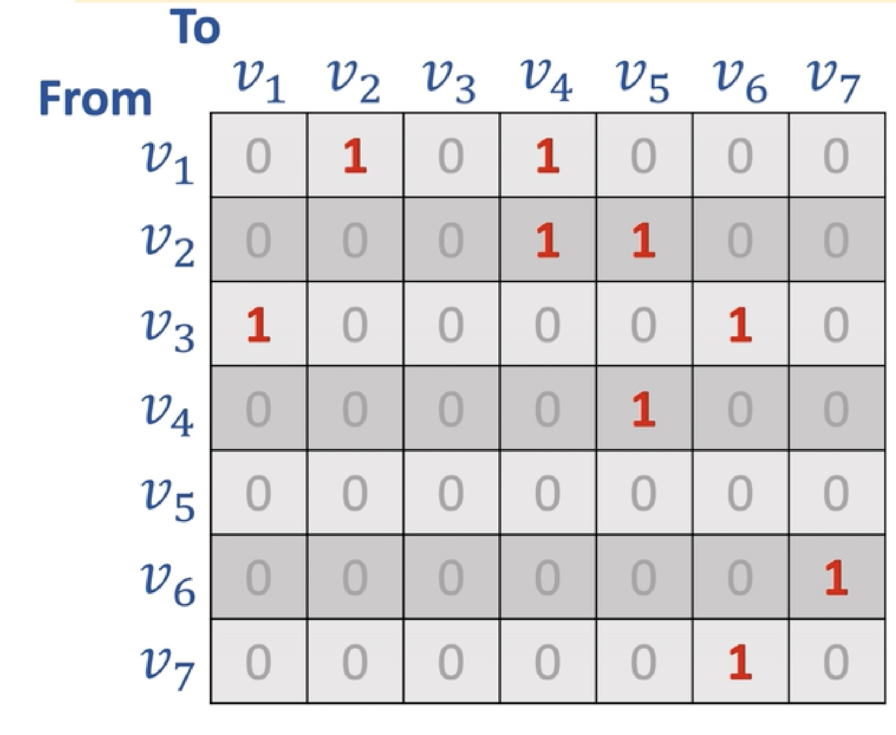
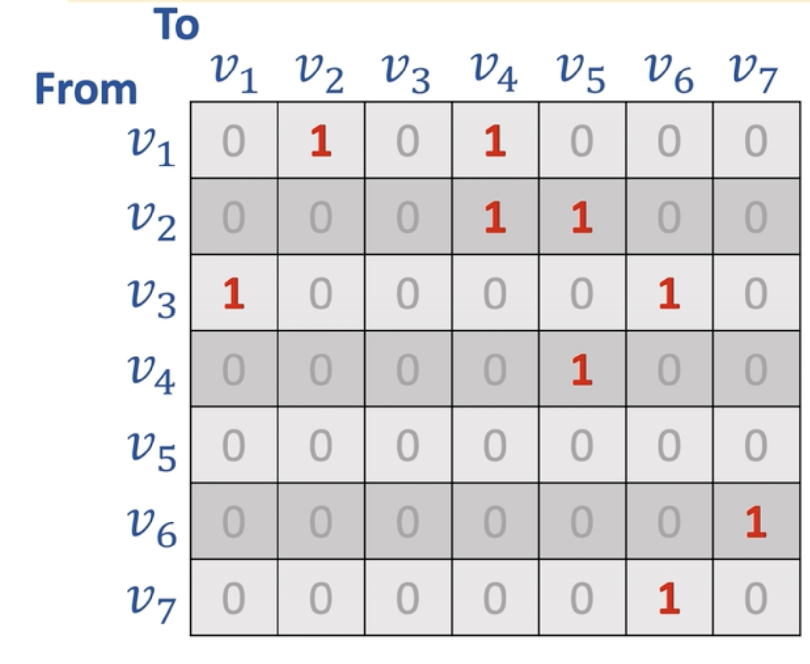
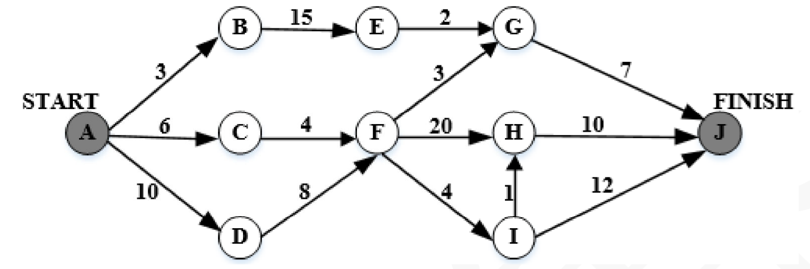

数据结构
正规式就是我们平常说的正则表达式
- 哈夫曼树的结点数和构造以及编码
- 逆波兰表达式
- 有向图和无向图
- 关键路径与松弛时间
- 折半查找
- 拓扑排序
- 广度优先遍历，深度优先遍历
- 快速排序
- 有向图的邻接矩阵，邻接链表
- 二叉排序树
哈夫曼树的结点树的构造以及编码
假设有n个权值,则构造出的哈夫曼树就有n个叶子节点
- 构造规则
- 将所有的结点都放到一起,根据权值由小到大排序
- 从节点列表中找出两个权值最小的进行合并形成一个根节点，根节点的权值为两个权值的和,并且这两个节点较小的在左边，较大的在右边
- 从列表中删除刚才选的那两个节点，并且把合并后的节点放入，并再次排序
- 一直重复上述过程 
- 节点个数
- 因为在二叉树中度为2的节点个数比度为0的节点个数少一,并且n个权值就有n个度为0度节点,那所有的节点数就为2n-1.
- 前缀编码
- 将构造好的哈夫曼树丛根节点开始,左边的边赋值为0,右边的边赋值为1.
- 从上往下组成二进制代码

逆波兰表达式
- (1+2)x(3+5)将运算符放到中间这叫中缀表达式
- 而逆波兰表达式就是将运算符放到最后
- 如12+35+x
图
- 无向图
- 对于图来说,可以用邻接矩阵和邻接表
- 对于一个有n个顶点的图,邻接矩阵的大小为n x n
- 有边的为权重值,无边的为0或者为无穷(∞)
 



- 有向图
 


关键路径
- 关键路径:从开始到结束得所有路径中，所需要时间最长的一条为关键路径。

- 从开始到结束,这里的每一个点都需要完成
- 不是说只有关键路径的点才需要完成
- 只是关键路径需要的时间最多,
-
其他路径完成了也得等着关键路径完成。
-
关键路径可以能不止一条,可以有多条路径的时间是一样的
- 我们重点关注一下松弛时间
松弛时间
- 松弛时间:不影响完工前提下,任务可以被推迟完成的最大时间
- 活动最晚开始时间-最早开始时间
- 关键路径的总时间-包含该任务的关键路径花的时间
-
以活动FG为例 
-
最早开始时间=A->D->F,为10+8=18
- 最晚开始时间:因为关键路径是耗时最长的,所以对于某个活动,他可以等到关键路径的时间-该活动到终点的时间
- 关键路径时间:48,FG到达终点时间:7+3=10,最晚开始时间:48-10=38
- 松弛时间:38-10=20